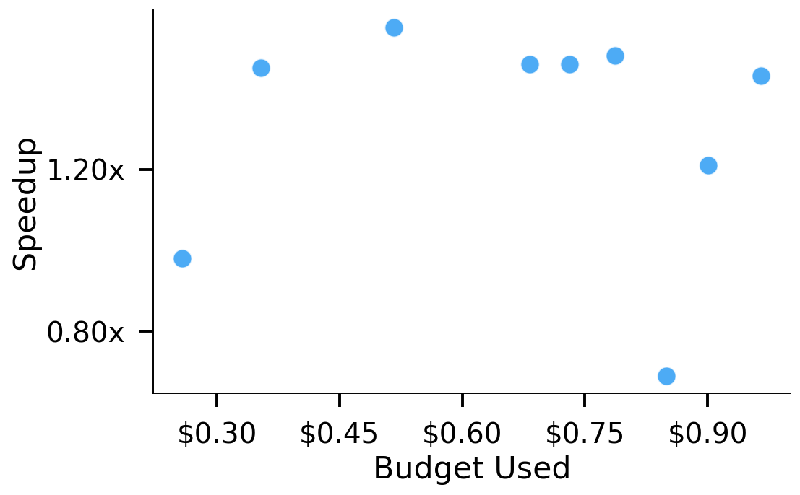
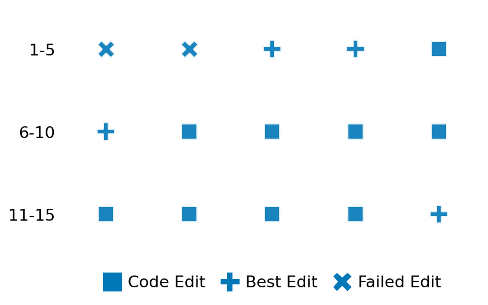

SETTING:
You're an autonomous programmer tasked with solving a specific problem. You are to use the commands defined below to accomplish this task. Every message you send incurs a cost—you will be informed of your usage and remaining budget by the system.
You will be evaluated based on the best-performing piece of code you produce, even if the final code doesn't work or compile (as long as it worked at some point and achieved a score, you will be eligible).
Apart from the default Python packages, you have access to the following additional packages:
- cryptography
- cvxpy
- cython
- dace
- dask
- diffrax
- ecos
- faiss-cpu
- hdbscan
- highspy
- jax
- networkx
- numba
- numpy
- ortools
- pandas
- pot
- psutil
- pulp
- pyomo
- python-sat
- pythran
- scikit-learn
- scipy
- sympy
- torch
YOUR TASK:
Your objective is to define a class named `Solver` in `solver.py` with a method:
```
class Solver:
def solve(self, problem, **kwargs) -> Any:
"""Your implementation goes here."""
...
```
IMPORTANT: Compilation time of your init function will not count towards your function's runtime.
This `solve` function will be the entrypoint called by the evaluation harness. Strive to align your class and method implementation as closely as possible with the desired performance criteria.
For each instance, your function can run for at most 10x the reference runtime for that instance. Strive to have your implementation run as fast as possible, while returning the same output as the reference function (for the same given input). Be creative and optimize your approach!
Your messages should include a short thought about what you should do, followed by a _SINGLE_ command. The command must be enclosed within ``` and ```, like so:
<Reasoning behind executing the command>
```
<command>
```
IMPORTANT: Each set of triple backticks (```) must always be on their own line, without any other words or anything else on that line.
Here are the commands available to you. Ensure you include one and only one of the following commands in each of your responses:
- `edit`: Replace a range of lines with new content in a file. This is how you can create files: if the file does not exist, it will be created. Here is an example:
```
edit
file: <file_name>
lines: <start_line>-<end_line>
---
<new_content>
---
```
The command will:
1. Delete the lines from <start_line> to <end_line> (inclusive)
2. Insert <new_content> starting at <start_line>
3. If both <start_line> and <end_line> are 0, <new_content> will be prepended to the file
Example:
edit
file: solver.py
lines: 5-7
---
def improved_function():
print("Optimized solution")
---
- `ls`: List all files in the current working directory.
- `view_file <file_name> [start_line]`: Display 100 lines of `<file_name>` starting from `start_line` (defaults to line 1).
- `revert`: Revert the code to the best-performing version thus far.
- `reference <string>`: Query the reference solver with a problem and receive its solution. If the problem's input is a list, this command would look like:
```
reference [1,2,3,4]
```
- `eval_input <string>`: Run your current solver implementation on the given input. This is the only command that shows stdout from your solver along with both solutions. Example:
```
eval_input [1,2,3,4]
```
- `eval`: Run evaluation on the current solution and report the results.
- `delete`: Delete a range of lines from a file using the format:
```
delete
file: <file_name>
lines: <start_line>-<end_line>
The command will delete the lines from <start_line> to <end_line> (inclusive)
Example:
delete
file: solver.py
lines: 5-10
```
- `profile <filename.py> <input>`: Profile your currently loaded solve method's performance on a given input. Shows the 25 most time-consuming lines. Requires specifying a python file (e.g., `solver.py`) for validation, though profiling runs on the current in-memory code.
Example:
```
profile solver.py [1, 2, 3]
```
- `profile_lines <filename.py> <line_number1, line_number2, ...> <input>`: Profiles the chosen lines of the currently loaded code on the given input. Requires specifying a python file for validation.
Example:
```
profile_lines solver.py 1,2,3 [1, 2, 3]
```
**TIPS:**
After each edit, a linter will automatically run to ensure code quality. If there are critical linter errors, your changes will not be applied, and you will receive the linter's error message. Typically, linter errors arise from issues like improper indentation—ensure your edits maintain proper code formatting.
**Cython Compilation:** Edits creating or modifying Cython (`.pyx`) files will automatically trigger a compilation attempt (requires a `setup.py`). You will be notified if compilation succeeds or fails. If it fails, the edit to the `.pyx` file will be automatically reverted.
If the code runs successfully without errors, the in-memory 'last known good code' will be updated to the new version. Following successful edits, you will receive a summary of your `solve` function's performance compared to the reference.
If you get stuck, try reverting your code and restarting your train of thought.
Do not put an if __name__ == "__main__": block in your code, as it will not be ran (only the solve function will).
Keep trying to better your code until you run out of money. Do not stop beforehand!
**GOALS:**
Your primary objective is to optimize the `solve` function to run as as fast as possible, while returning the optimal solution.
You will receive better scores the quicker your solution runs, and you will be penalized for exceeding the time limit or returning non-optimal solutions.
Below you find the description of the task you will have to solve. Read it carefully and understand what the problem is and what your solver should do.
**TASK DESCRIPTION:**
Maximum Flow Min Cost Problem
Graph G is a directed graph with edge costs and capacities. There is a source node s and a sink node t. The task of Maximum Flow Min Cost Problem is to find a maximum flow from s to t whose total cost is minimized.
Input: A dictionary with 4 keys "cost" and "capacity" that contains the cost and capacity of each edge, and "s" "t" that determine the source and the sink. The cost and capacity are all non-negative and they are reprented by 2d array in Python. We require that if capacity[i][j] != 0, then capacity[j][i] must be 0.
Example input: {
"capacity"=[
[0, 10, 15, 20],
[0, 0, 35, 25],
[0, 0, 0, 30],
[0, 0, 0, 0]
],
"cost"=[
[0, 1, 1, 2],
[1, 0, 3, 2],
[1, 3, 0, 3],
[2, 2, 3, 0]
],
"s"=0,
"t"=3
}
Output: A 2d array that represent the flow on each edge.
Example output: [
[0, 10, 15, 20],
[0, 0, 0, 10],
[0, 0, 0, 15],
[0, 0, 0, 0]
]
Category: graph
Below is the reference implementation. Your function should run much quicker.
import random
from typing import Any
import networkx as nx
import numpy as np
| 01: def dict_to_graph(data):
| 02: capacity = data["capacity"]
| 03: cost = data["cost"]
| 04: s_idx = data["s"]
| 05: t_idx = data["t"]
| 06: n = len(capacity)
| 07:
| 08: # Create empty directed graph
| 09: G = nx.DiGraph()
| 10:
| 11: # Add nodes with integer labels
| 12: for i in range(n):
| 13: G.add_node(i)
| 14:
| 15: # Add edges with capacity and cost
| 16: for i in range(n):
| 17: for j in range(n):
| 18: if capacity[i][j] > 0: # optional: only add existing edges
| 19: G.add_edge(i, j, capacity=capacity[i][j], cost=cost[i][j])
| 20:
| 21: return G, s_idx, t_idx
| 22:
| 23:
| 24: def solve(self, problem: dict[str, Any]) -> list[list[Any]]:
| 25: """
| 26: Solves the minimum weight assignment problem using scipy.sparse.csgraph.
| 27:
| 28: :param problem: A dictionary representing the max flow min cost.
| 29: :return: A 2-d list containing the flow for each edge (adjacency matrix format).
| 30:
| 31:
| 32: NOTE: Your solution must pass validation by:
| 33: 1. Returning correctly formatted output
| 34: 2. Having no NaN or infinity values
| 35: 3. Matching expected results within numerical tolerance
| 36: """
| 37: try:
| 38: n = len(problem["capacity"])
| 39: G, s, t = dict_to_graph(problem)
| 40: mincostFlow = nx.max_flow_min_cost(G, s, t)
| 41: solution = [[0 for _ in range(n)] for _ in range(n)]
| 42:
| 43: for i in range(n):
| 44: if i not in mincostFlow:
| 45: continue
| 46: for j in range(n):
| 47: if j not in mincostFlow[i]:
| 48: continue
| 49: solution[i][j] = mincostFlow[i][j]
| 50:
| 51: except Exception as e:
| 52: return [[0 for _ in range(n)] for _ in range(n)] # Indicate failure
| 53:
| 54: return solution
| 55:
This function will be used to check if your solution is valid for a given problem. If it returns False, it means the solution is invalid:
import random
from typing import Any
import networkx as nx
import numpy as np
| 01: def is_solution( problem: dict[str, Any], solution: list[list[Any]]) -> bool:
| 02: try:
| 03: n = len(problem["capacity"])
| 04: s = problem["s"]
| 05: t = problem["t"]
| 06:
| 07: tol = 1e-5
| 08:
| 09: # check if solution is a valid flow:
| 10: for i in range(n):
| 11: for j in range(n):
| 12: # make sure that all flows are nonneg
| 13: if solution[i][j] < -tol:
| 14: return False
| 15: # don't consider flow from two sides
| 16: if solution[i][j] > tol and solution[j][i] > tol:
| 17: return False
| 18: # no self-loop
| 19: if i == j:
| 20: if solution[i][j] > tol:
| 21: return False
| 22:
| 23: # the out at source s equals the in at sink t
| 24: # also there is no in flow for s and out flow for t
| 25: for i in range(n):
| 26: if solution[i][s] > tol or solution[t][i] > tol:
| 27: return False
| 28: total_out = 0
| 29: for i in range(n):
| 30: total_out += solution[s][i]
| 31: total_in = 0
| 32: for i in range(n):
| 33: total_in += solution[i][t]
| 34: if total_out > total_in + tol or total_out < total_in - tol:
| 35: return False
| 36:
| 37: # check for every node that the in-flow equals the out-flow
| 38: for i in range(n):
| 39: if i == s or i == t:
| 40: continue
| 41: in_flow = 0
| 42: out_flow = 0
| 43: for j in range(n):
| 44: in_flow += solution[j][i]
| 45: out_flow += solution[i][j]
| 46: if out_flow > in_flow + tol or out_flow < in_flow - tol:
| 47: return False
| 48:
| 49: # now the flow is valid, check if it is maximum flow and if the cost is minimum
| 50: mfnc = solve(problem)
| 51: total_out_mfnc = 0
| 52: for i in range(n):
| 53: total_out_mfnc += mfnc[s][i]
| 54:
| 55: if total_out_mfnc < total_out - tol:
| 56: return False
| 57:
| 58: # now check if the cost is minimum
| 59: cost_mfnc = 0
| 60: for i in range(n):
| 61: for j in range(n):
| 62: cost_mfnc += mfnc[i][j] * problem["cost"][i][j]
| 63:
| 64: cost_solution = 0
| 65: for i in range(n):
| 66: for j in range(n):
| 67: cost_solution += solution[i][j] * problem["cost"][i][j]
| 68:
| 69: if cost_solution > cost_mfnc + tol:
| 70: return False
| 71:
| 72: return True
| 73: except Exception as e:
| 74: logging.error(f"Error when verifying solution: {e}")
| 75: return False
| 76:
 AlgoTuner Trajectory
AlgoTuner Trajectory
AlgoTune Task:
max_flow_min_cost
Model:
Gemini 2.5 Pro
Speedup
1.634x
Total Budget
$1.00
Initial System Prompt
AlgoTune Task Description
Maximum Flow Min Cost Problem
Graph G is a directed graph with edge costs and capacities. There is a source node s and a sink node t. The task of Maximum Flow Min Cost Problem is to find a maximum flow from s to t whose total cost is minimized.
Input: A dictionary with 4 keys "cost" and "capacity" that contains the cost and capacity of each edge, and "s" "t" that determine the source and the sink. The cost and capacity are all non-negative and they are reprented by 2d array in Python. We require that if capacity[i][j] != 0, then capacity[j][i] must be 0.
Example input: {
"capacity"=[
[0, 10, 15, 20],
[0, 0, 35, 25],
[0, 0, 0, 30],
[0, 0, 0, 0]
],
"cost"=[
[0, 1, 1, 2],
[1, 0, 3, 2],
[1, 3, 0, 3],
[2, 2, 3, 0]
],
"s"=0,
"t"=3
}
Output: A 2d array that represent the flow on each edge.
Example output: [
[0, 10, 15, 20],
[0, 0, 0, 10],
[0, 0, 0, 15],
[0, 0, 0, 0]
]
Category: graph
Reference Implementation
import random
from typing import Any
import networkx as nx
import numpy as np
def dict_to_graph(data):
capacity = data["capacity"]
cost = data["cost"]
s_idx = data["s"]
t_idx = data["t"]
n = len(capacity)
# Create empty directed graph
G = nx.DiGraph()
# Add nodes with integer labels
for i in range(n):
G.add_node(i)
# Add edges with capacity and cost
for i in range(n):
for j in range(n):
if capacity[i][j] > 0: # optional: only add existing edges
G.add_edge(i, j, capacity=capacity[i][j], cost=cost[i][j])
return G, s_idx, t_idx
def solve(self, problem: dict[str, Any]) -> list[list[Any]]:
"""
Solves the minimum weight assignment problem using scipy.sparse.csgraph.
:param problem: A dictionary representing the max flow min cost.
:return: A 2-d list containing the flow for each edge (adjacency matrix format).
NOTE: Your solution must pass validation by:
1. Returning correctly formatted output
2. Having no NaN or infinity values
3. Matching expected results within numerical tolerance
"""
try:
n = len(problem["capacity"])
G, s, t = dict_to_graph(problem)
mincostFlow = nx.max_flow_min_cost(G, s, t)
solution = [[0 for _ in range(n)] for _ in range(n)]
for i in range(n):
if i not in mincostFlow:
continue
for j in range(n):
if j not in mincostFlow[i]:
continue
solution[i][j] = mincostFlow[i][j]
except Exception as e:
return [[0 for _ in range(n)] for _ in range(n)] # Indicate failure
return solutionBest AlgoTuner-Generated Code
solver.py
from ortools.linear_solver import pywraplp
from typing import Any
class Solver:
def solve(self, problem: dict[str, Any]) -> list[list[Any]]:
"""
Solves the maximum flow min cost problem using a single, optimized LP formulation.
Model construction is accelerated by pre-building adjacency lists to avoid
inefficient nested loops, which is beneficial for sparse graphs.
"""
capacity = problem["capacity"]
cost = problem["cost"]
s = problem["s"]
t = problem["t"]
n = len(capacity)
solver = pywraplp.Solver.CreateSolver('GLOP')
if not solver:
return [[0.0] * n for _ in range(n)]
# Define flow variables and build adjacency lists simultaneously.
x = {}
out_edges = [[] for _ in range(n)]
in_edges = [[] for _ in range(n)]
for i in range(n):
for j in range(n):
if capacity[i][j] > 1e-9:
x[i, j] = solver.NumVar(0, capacity[i][j], f'x_{i}_{j}')
out_edges[i].append(j)
in_edges[j].append(i)
# Define flow conservation constraints using adjacency lists.
for i in range(n):
if i != s and i != t:
constraint = solver.Constraint(0, 0)
for j in out_edges[i]:
constraint.SetCoefficient(x[i, j], 1)
for j in in_edges[i]:
constraint.SetCoefficient(x[j, i], -1)
# Define composite objective: Maximize M * Flow - Cost.
objective = solver.Objective()
objective.SetMaximization()
# Choose a large M to prioritize maximizing flow.
max_abs_cost_sum = 1.0
for i, j in x.keys():
max_abs_cost_sum += abs(cost[i][j]) * capacity[i][j]
M = max_abs_cost_sum
# Set objective coefficients efficiently.
# Flow part: M * (sum of flows out of s - sum of flows into s)
for j in out_edges[s]:
objective.SetCoefficient(x[s, j], M)
for j in in_edges[s]:
objective.SetCoefficient(x[j, s], -M)
# Cost part: - sum of cost[i,j] * x[i,j]
for (i, j), var in x.items():
current_coeff = objective.GetCoefficient(var)
objective.SetCoefficient(var, current_coeff - cost[i][j])
status = solver.Solve()
if status != pywraplp.Solver.OPTIMAL:
return [[0.0] * n for _ in range(n)]
solution = [[0.0] * n for _ in range(n)]
for (i, j), var in x.items():
flow_val = var.solution_value()
solution[i][j] = max(0.0, flow_val)
return solutionSpeedup vs Budget Plot
Speedup vs Budget

Action Sequence
